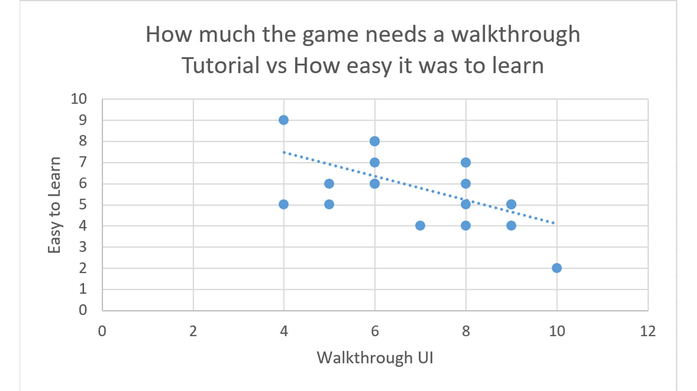
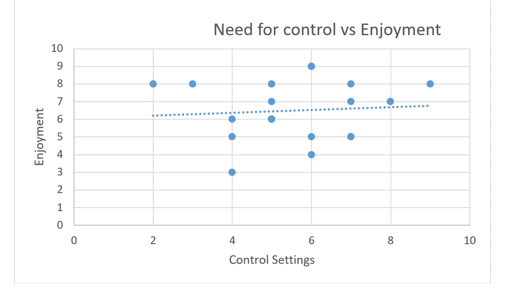

Nebula Knights
Usability Evaluation - Results
Write-Up
I gathered some very interesting results that tell you a lot about how people percieve the game that I would not have realised as a developer.
One of these is that many people prefer having a walkthrough tutorial than having controls on a loading screen as they feel that they can learn
the controls better by doing. Another is that the majority of people prefer to have a large amount of control over the options within a game such as
Audio volume and graphical quality.

The above graph shows the relationship between how much people wanted a walkthrough tutorial and how easy the game was to learn without one. It shows
that there is a negative correlation between the two. That is to say that the more a person wanted a walkthrough tutorial the harder they found it to
learn without one. I will discuss the repercussions this would have on the game in the discussion tab.

This graph shows how much control people felt they had over the game settings and how much they enjoyed the gaming experience. It shows that there is
a weak positive correlation between the amount of control and total enjoyment. This could have some very interesting effects on how games are made and
on how we could mdify Nebula Knights to improve players enjoyment in the game.